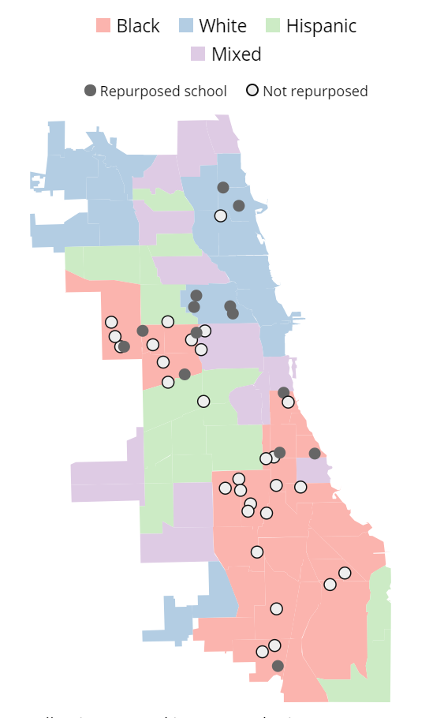
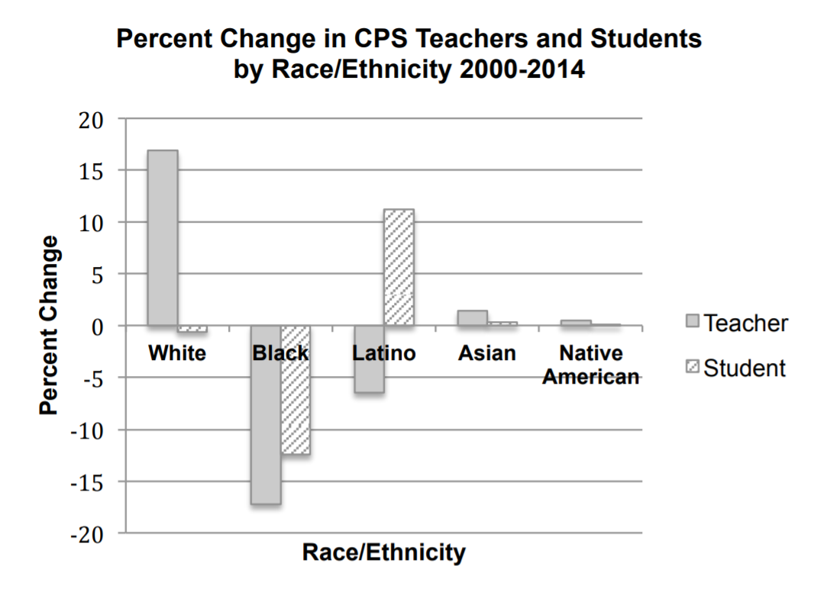
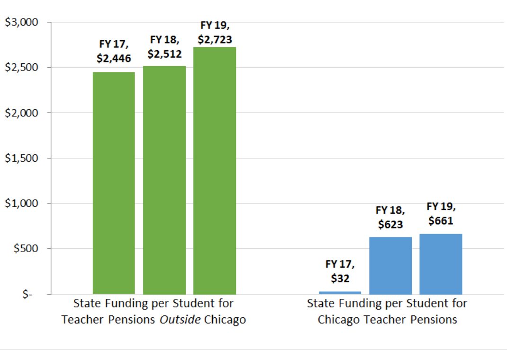

Shape the Future for Our Kids
We believe educating our children is one of the most sacred responsibilities of our society, and we as a community demand the following from our elected representativesComprehensive Student Assessments
Fully-resourced Schools
Equitable Funding
Protection Against Student Push-out and School Closures
How Would an Elected Board Work
Why Your Vote Matters
Assessment of Chicago's Mayor-appointed School Board

Increasing School Closings
Less Opportunities for Black Children
Wider Gap in Student Outcomes
Increasing Racial Disparities in NAEP ResultsLimited Community Participation
All board meetings are held during weekday when people need to go to work and each registered participant can only speak for two mins. The board structures and processes limit public input and democratic accountability.

Less Opportunity to Learn
High Rate of Teacher Turnover and Decline of African American Teaching Staff
